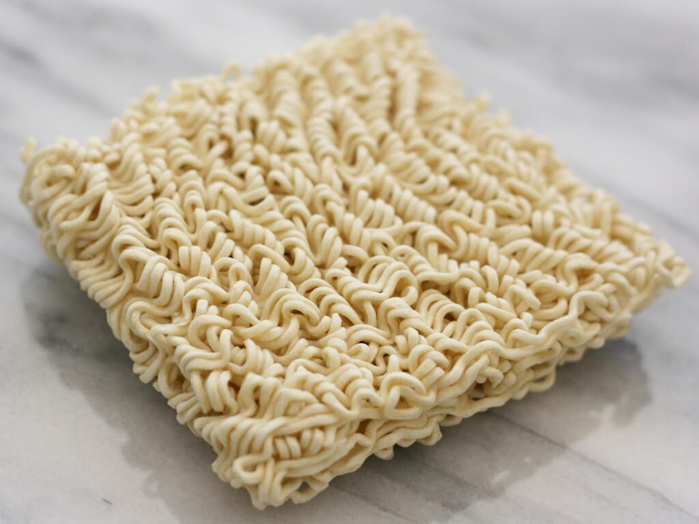

Homepage
Delicious Ramen

Description
This fan favorite is as easy to make as they come. A salty treat with a classic chicken
taste that is sure to elicit some nostalgic memories.
Ingredients
- 2 cups of water
- Packet of noodles
- Seasoning Packet
Steps
- Boil 2 cups of water in a sauce pan. Add noodles, breaking up if desired. Cook for 3
minutesor until noodles are tender, stirring occasionally.
- Remove from heat. Stir in seasonings from flavor packet. To lower sodium, use
less seasoning.